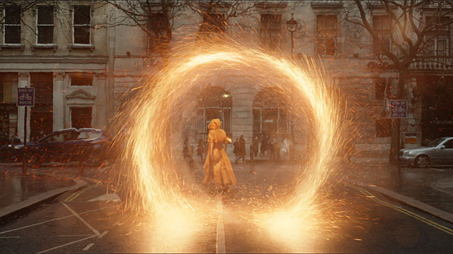

Doctor Strange - Khởi đầu cho cuộc chiến không gian
11/12/2016 01:02
Sau thành công của Civil War thì Marvel tiếp tục tung ra bom tấn cuối cùng trong năm là Doctor Strange. Một bộ phim để kết thúc năm 2016 của hãng Marvel nhưng lại là mở đầu cho những gì hấp dẫn sắp tới mà hãng này mang lại. Một cuộc hành trình dài và hứa hẹn hoành tráng hơn gấp bội lần so với những gì trước đó hãng đã đem lại cho người xem.
Trailer của phim Doctor Strange
Mở đầu phim chúng ta thấy có sự thay đổi về cách trình bày của Marvel, thay vì những trang truyện lật thì giờ đây là hình ảnh các nhân vật trong nhóm Avengers lần lượt xuất hiện trong logo "Marvel Studios". Điều đó cho thấy đã bắt đầu có sự thay đổi của vũ trụ siêu anh hùng Marvel và như là 1 sự hứa hẹn sự xuất hiện trở lại của biệt đội Avengers sau khi nội chiến xảy ra. Và sau đó ta lại tiếp tục được chứng kiến cảnh The Ancient One đang chiến đấu với những tên học trò phản bội của mình trong 1 không gian huyền ảo và đương nhiên là bằng phép thuật chứ không còn là dùng máy móc/công nghệ, đột biến hay thậm chí đánh tay đôi. Chỉ mới nhiêu đây Marvel đã ngầm hứa hẹn rất nhiều về vũ trụ Marvel ngoài không gian chứ không chỉ xoay quanh "nội bộ" Trái Đất như các phim trước đó nữa!

Về nội dung phim cũng khá dễ hiểu, cho dù là fan hay chỉ mới xem qua vài lần phim Marvel điều có thể hiểu. Đó cũng chính là một trong những điểm hay của hãng phim này. Cộng với diễn biến tâm lý, hành động của các nhận vật cũng rất "trực tiếp" khiến người xem không phải "đau đầu suy nghĩ" như một số phim cũng về các SAH của hãng DC Comics.
Về nhân vật thì phải nói là Benedict Cumberbatch rất phù hợp với vai diễn Dr.Strange này. Tính cách của anh qua vai diễn nổi tiếng Sherlock Holmes trước đó cũng có rất nhiều nét tương đồng với vị bác sĩ Strange này. Chính vì vậy chỉ có anh mới có thể đưa nhân vật này lên đúng tầm của nó và sáng ngang về độ tự cao với anh chàng Tony Stark (Iron Man) được. Ngoài ra trong phim nhân vật The Ancient One cũng để lại ấn tượng khá lớn với tôi. Trong truyện thì đây là 1 "ông" pháp sư nhưng khi lên phim thì lại là "bà". Sự thay đổi này của Marvel ban đầu có thể khiến fan hơi khó hiểu nhưng sau khi xem diễn xuất của Tilda Swinton thì tôi cảm thấy Marvel đưa ra lựa chọn luôn khá đúng đắn. Chỉ có thể là một phụ nữ mới có thể biểu đạt sự quan tâm ân cần lẫn có tí dịu dàng của một vị sư phụ với đồ đệ tốt nhất.

Còn về kỹ xảo phim thì chắc tất cả mọi người đều đồng ý rằng phim có kỹ xảo ảo diệu nhất từ trước đến giờ của dòng phim SAH nhỉ. Xem phim dưới định dạng IMAX 3D xong ra mà quay cuồng. Nào là những tòa nhà xoắn tít, xoay cuộn vòng, nào là những không gian khác nhau chỉ cách nhau qua "1 lớp kính",... Tất cả đều tạo nên nét riêng biệt của Doctor Strange so với các phim khác, 1 cuộc chiến phép thuật "vi diệu".
Điểm trừ duy nhất ở phim theo tôi là ở đoạn kết hơi bị nhanh và quá dễ để hạ "trùm cuối". Chắc do mới mở đầu nên làm dễ dễ tí để Strange còn kịp thở và chuẩn bị cho các cuộc chiến kinh thiên động địa phía sau. Nhất là sau khi cuối phim anh đã gặp chàng Thỏ (Thor) và hứa sẽ giúp anh này. Chắc chắn sẽ có những cuộc chiến xuyên không gian và thậm chí là thời gian sẽ diễn ra sau khi anh Strange lên sóng.
Cuối cùng theo tôi phim rất đáng để xem và tốt nhất nên xem ở định dạng IMAX 3D để cảm nhận được độ "ảo" của phim một cách chân thật nhất. Chấm điểm: 9.5/10.
Luận
-

Trailer coi bộ hay.
on December 5th, 2016 -
Wow! Phải đi xem thôi!
on December 5th, 2016 -

Phim chắc hay đấy!
on December 5th, 2016